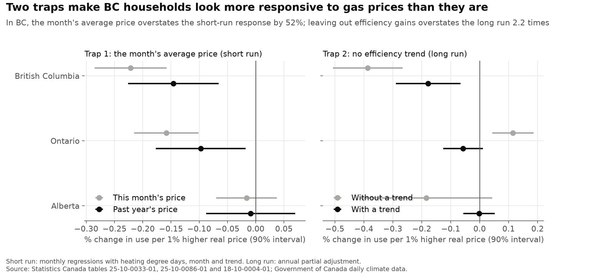
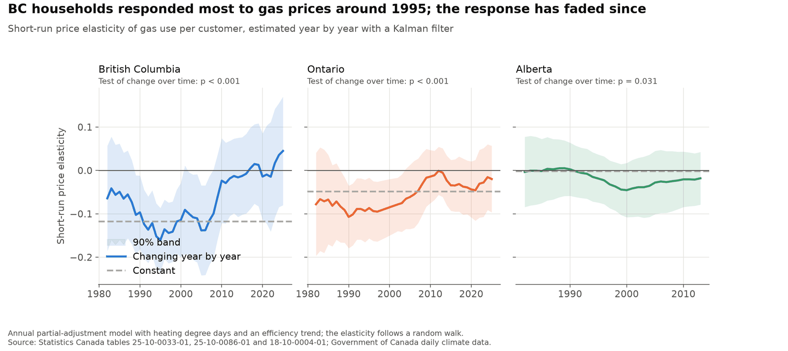
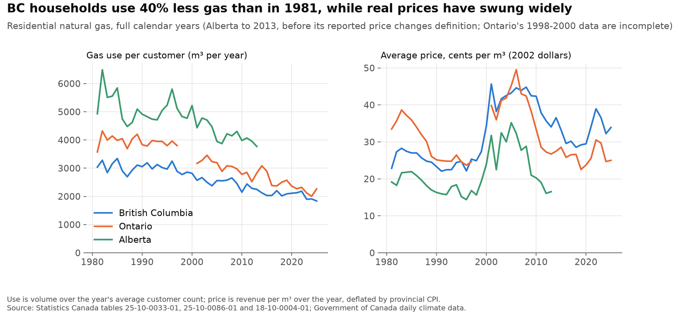
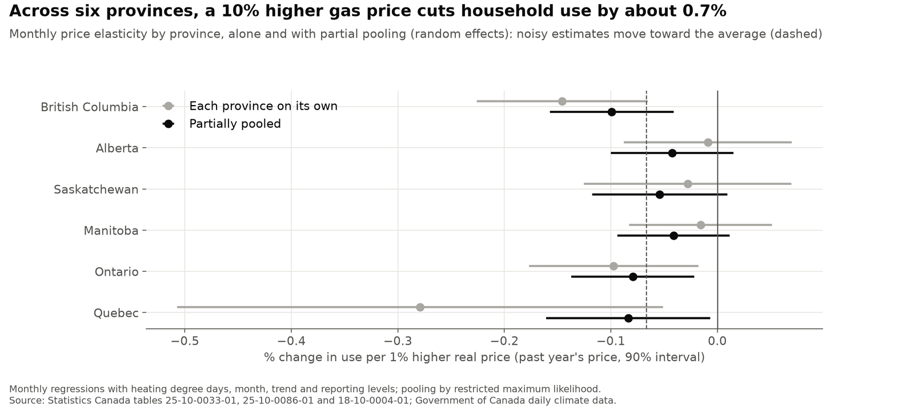
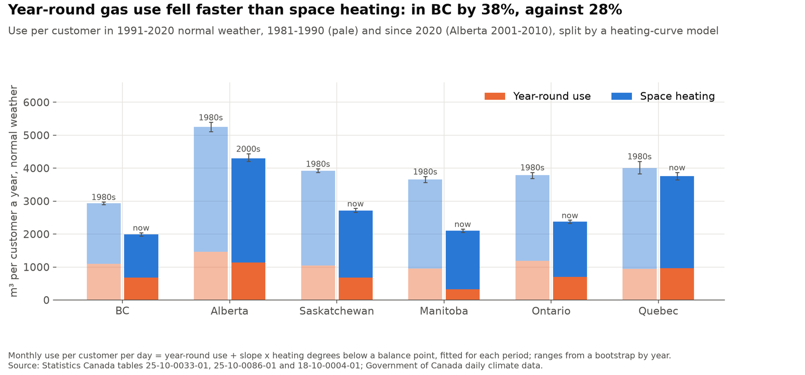
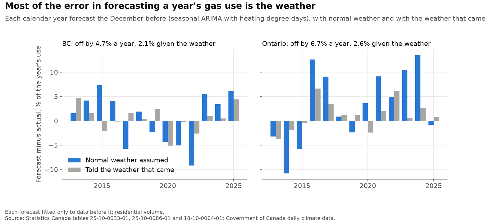
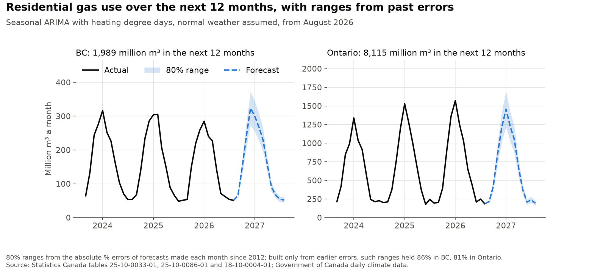
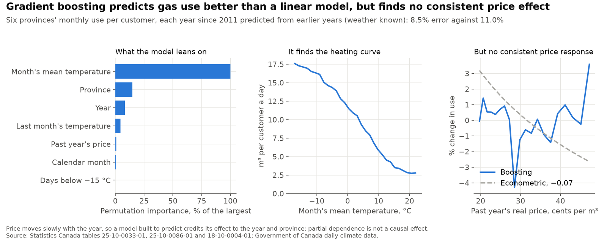

Household gas demand in Canada since 1981: price, efficiency and forecasts
Five questions about residential natural gas, each answered with public data and a method suited to it, from regressions and partial pooling to heating-curve models, calibrated forecasts and machine learning. The price response is measured in BC, Ontario and Alberta; the other questions add Saskatchewan, Manitoba and Quebec. The results are as of October 2026, with data through August 2026; the live dashboard updates the main series and the forecast each month.
Personal project: my own analysis of publicly available data. It is not associated with my work for any current or past employer and does not represent their views.
At a glance
| Question | Methods | Answer |
|---|---|---|
| How much do households respond to price? | Regression, partial adjustment, Kalman filter | A little: in BC a 10% higher price cuts use 1.2% within the year and 1.8% in the long run; two traps overstate it. |
| Is BC different from other provinces? | Random effects (partial pooling), recursive bootstrap | Across six provinces the response averages −0.07; BC's −0.15 moves to −0.10 once its noise is allowed for. |
| Where did the fall in use come from? | Heating-curve (balance-point) regression, bootstrap, segmented trends | In BC, 45% of it from year-round use such as water heating, which fell 38% against 28% for space heating; the decline began in 2000. |
| How well can demand be forecast? | Seasonal ARIMA, exponential smoothing, conformal prediction | A year ahead, off by 4.7% on average in BC and 6.7% in Ontario; given the weather, 2.1% and 2.6%. |
| What does machine learning see? | Gradient boosting, permutation importance, partial dependence | Better predictions than a linear model and the heating curve, but no consistent price effect. |
1. How much do households respond to price?

- Households respond only a little to gas prices. In BC, a 10% higher real price cuts gas use per customer by about 1.2% within the year and 1.8% once households have adjusted (elasticities of −0.12 and −0.18). Ontario's response is smaller (about −0.05), and Alberta's, with cheap gas and cold winters, is indistinguishable from zero.
- Trap 1: the month's average price. The only price in the data is revenue per cubic metre, which includes fixed monthly charges. In a cold month the fixed charge is spread over more gas, so the average price falls just as use rises, and a regression reads the weather as a price response. Using the average price over the previous 12 months removes this: the month's price overstates the response by 52% in BC and 63% in Ontario.
- Trap 2: leaving out efficiency gains. Gas use per customer fell 40% in BC from 1981 to 2025 and 37% in Ontario, about 7-10% a decade. Prices rose over much of that time, so a model without a trend credits the price for the efficiency gains: BC's long-run response looks 2.2 times too large, and Ontario's comes out with the wrong sign.
- The response has faded since about 2010. Estimated year by year, BC's short-run elasticity was strongest around 1995 (−0.16) and averaged −0.12 over 1990-2005, but has been close to zero since 2011; Ontario's moved from about −0.09 to −0.03. The change is statistically clear in BC and Ontario (p < 0.001). The data cannot show why.


2. Is BC different from other provinces?
The same monthly model in BC, Alberta, Saskatchewan, Manitoba, Ontario and Quebec gives six price elasticities with very different precision, from −0.01 in Alberta to −0.28 in Quebec. A random-effects model estimates the average (−0.067, SE 0.028) and the real spread between provinces (a standard deviation of 0.04), and moves each province toward the average by as much as its own noise warrants. BC's −0.15 becomes −0.10, still the largest, and Quebec's −0.28, the noisiest, becomes −0.08. For the long run, a bootstrap that rebuilds each series year by year gives a range close to the delta method's for BC (−0.28 to −0.07) and a narrower one for Quebec (−0.95 to −0.15, against −1.08 to −0.05).

3. Where did the fall in use come from?
Each month's gas use per customer against its average temperature traces a heating curve: a floor of year-round use (water heating, cooking, dryers), and a slope below a balance point of about 14-15 °C in BC and Ontario. Fitted for each decade, the curves move down in two ways: the floor drops and the slope flattens.
Pick a province, or a period to highlight it; hover or tap a dot for the month. Use is m³ per customer per day. Alberta's series ends in 2014.
In 1991-2020 normal weather, BC's use per customer fell from 2,939 m³ a year in 1981-1990 to 1,996 since 2020 (90% range 1,939-2,047). Year-round use fell 38% and space heating 28%, so year-round use, about a third of the total, accounts for 45% of the fall. In Ontario year-round use fell 41% and heating 35%. Split into straight-line segments, with the number of breaks chosen by the LWZ criterion because BIC found breaks in simulated straight lines too often, BC's weather-normalised use is flat until 1999 and falls 1.4% a year from 2000. Ontario's decline starts in 1992 (90% range 1988-1996) and Saskatchewan's in 1991, both at about 1.7% a year.

4. How well can demand be forecast?
Each month since December 2012, a seasonal ARIMA with heating degree days forecast the next 12 months of residential gas volume from earlier data only, assuming normal weather. Month by month it missed by about 9% in BC and 9-12% in Ontario. The weather is most of that: told the weather that came, the same model misses a year's total by 2.1% in BC and 2.6% in Ontario, against 4.7% and 6.7%. Ranges built from the model's own earlier errors held 86% and 81% of outcomes at a stated 80%; the model's own ranges held only 62% in Ontario. For a year's total in BC, repeating last year did as well; what the model adds is the monthly shape, ranges that hold and the split into weather and the rest.
Black: actual. Blue dashed: forecast with normal weather, shaded 80% range. Grey: the same model told the weather that came. Million m³ a month.


5. What does machine learning see?
Gradient boosting on the month's temperature, last month's, the share of very cold days, calendar month, year, the past year's price and the province predicts each year from 2011, trained on earlier years only, with an error of 8.5% against 11.0% for a linear model of each province. It leans mostly on temperature, and its partial dependence on temperature redraws the heating curve, flattening in the coldest months. It finds no consistent price effect: price moves slowly with the year and differs by province, and a model built to predict credits that movement to the year and the province. That is why the price response comes from the econometric models, not this one.

How it works
Monthly residential gas volume, revenue and customers come from two Statistics Canada tables, one ending in 2015 and one starting in 2016. Use per customer is volume over customers; the price is revenue per cubic metre, deflated by the provincial consumer price index; heating degree days come from daily temperatures at Vancouver, Calgary, Regina, Winnipeg, Toronto and Montreal airports. Three problems in the tables are handled explicitly: Alberta's reported price covers only the gas commodity from November 2014, so Alberta is analysed to 2013; Ontario's 1998-2000 data are incomplete and left out; and Ontario's 2016-2018 customer counts are undercounted and interpolated. Each period between reporting changes gets its own level, after the data showed that without one, the jump across Ontario's gap was read as a price response. The same test gives Manitoba a level from 2007 and Quebec one from 2019.
The monthly model regresses log use per customer on a log real price, heating degree days, calendar month and a linear trend, with standard errors robust to a year of autocorrelation, once with the month's own price and once with the previous 12 months' average. The annual partial-adjustment model adds last year's use, so households close part of the gap to their long-run level each year: the short-run elasticity is the price coefficient and the long-run one divides it by one minus the coefficient on last year's use, with a delta-method standard error.
For change over time, the same annual model is written as a state space in which the short-run elasticity follows a random walk. Its variance is estimated by maximum likelihood and the Kalman smoother traces the elasticity with a 90% band. A likelihood-ratio test compares it with a constant elasticity, halving the p-value because the variance being tested sits on its boundary. Tests on simulated data check that the models recover known elasticities, a known heating curve, a known average and spread across provinces and a planted trend break, and that conformal ranges use only errors known at the time.
Limits
- The price is an average, not the price of the next cubic metre, and includes the taxes and charges in force at the time, including carbon charges where they applied. The project estimates the response to the total price only and does not evaluate any carbon pricing or other policy.
- Customers, not households, and aggregate data: the estimates are averages across very different homes, heating systems and incomes. One airport per province stands in for the weather where customers live.
- Rates are regulated and follow wholesale markets, so they respond little to one province's demand within a year, but the estimates are associations under the model's assumptions, not proof of cause.
- The annual models have 32-44 years, and how much the elasticity appears to change depends on including the efficiency trend.
- Manitoba's 2007 and Quebec's 2019 reporting levels are inferred from jumps in the data, and the six-province results depend on them. Year-round use is whatever does not follow the temperature, so a changing mix of customers moves it as well as more efficient appliances.
- Forecasts assume normal weather, which is most of their error. Partial dependence shows what a model learned from the data, not what would happen if one input changed alone.
Data
Monthly residential natural gas sales, revenue and customers from Statistics Canada tables 25-10-0033-01 (1980-2015) and 25-10-0086-01 (2016 onward); provincial consumer price index from table 18-10-0004-01; daily mean temperatures from Government of Canada daily climate data. Analysis in Python with pandas, statsmodels and scikit-learn, with automated tests; interactive charts drawn in plain JavaScript; code under the MIT licence.
Adapted from Statistics Canada; this does not constitute an endorsement by Statistics Canada of this product. Contains information licensed under the Open Government Licence - Canada.